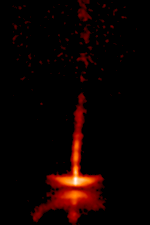

Named for the first of their type observed, T Tauri stars are variable stars which show both periodic and random fluctuations in their brightnesses. They are newly-formed (< 10 million years old) low to intermediate mass stars (< 3 solar masses) with central temperatures too low for nuclear fusion to have started. Indeed, for up to another ~100 million years, the emitted radiation will come entirely from the gravitational energy released as the star contracts under its own self-gravity. T Tauri stars therefore represent an intermediate stage between real protostars (e.g. YY Orionis stars) and low-mass main sequence (hydrogen burning) stars like the Sun.
The nearest T Tauri stars to us are in the Taurus and ρ-Ophiuchus molecular clouds, both about 400 light years away. The prototypical T Tauri star – T Tauri itself – is part of a close binary system with a smaller, fainter companion. This is visible in the high resolution infrared image below. This image also reveals the complexity of this environment, with hints of stellar winds and jets showing that at least some T Tauri stars are interacting with their environments.
Both the winds and jets of T Tauri stars are thought to be powered by material falling onto the central star via the accretion disk (or protoplanetary disk) observed to surround many of them. Planets will also form from this protoplanetary disk and some may survive to form a planetary system surrounding the newborn star.
|

The T Tauri star HH-30 shows ‘bullets’ of material propagating along a jet.
Credit: NASA, A. Watson (UNAM), K. Stapelfeldt (JPL), J. Krist (STScI) and C. Burrows (ESA/ STScI) |
The variability of T Tauri stars has a number of potential sources:
- The random variations (with time-scales from minutes to years) may be caused by instabilities in the accretion disk (which also produce the ‘bullets’ of material seen in the jet of HH-30 above), flares on the stellar surface, or simple obscuration by nearby dust and gas clouds.
- The periodic (regular) variations (with timescales of days) are almost certainly associated with huge sunspots on the stellar surface which pass into and out of view as the star rotates.
The variations of T Tauri stars provide a rich source of information about the various components of these newly formed star systems. In addition, as a phase of stellar evolution through which our Sun and Solar System passed about 5 billion years ago, the study of T Tauri stars allows a glimpse into the past of both our central star and its planetary system.